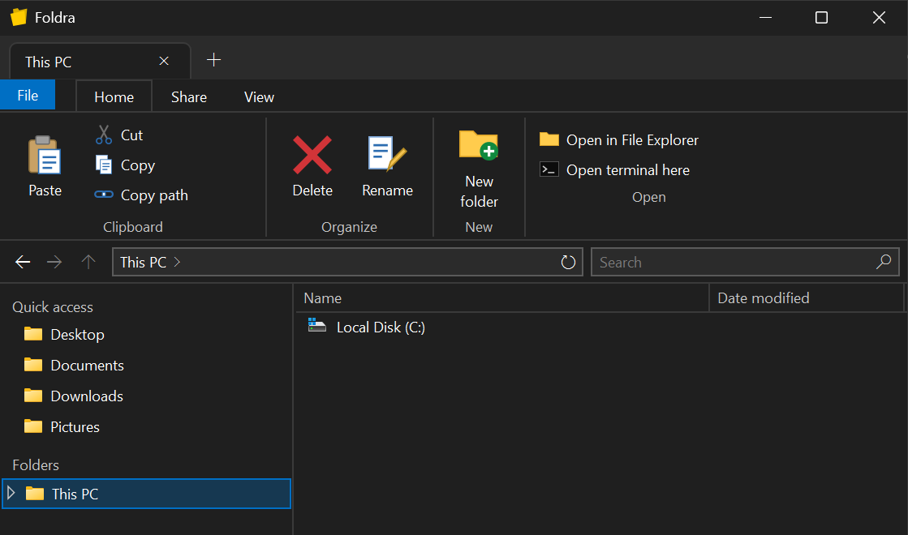

$ foldra
tabbed file explorer for Windows 10 & 11
A lightweight file explorer with tabs that leaves the heavy lifting to Windows itself: the real shell context menu, the native copy and delete dialogs, system icons, thumbnails and Windows Search. Free and open source.
↓ Download Foldra 0.1 AlphaWindows 10/11 x64 · single .exe, ~60 MB · no installation, no .NET needed · all releases

$ foldra --features
- tabs Ctrl+T, Ctrl+W, drag to reorder, middle-click a folder to open it in a new tab. Your tabs come back on the next start.
- real shell integration The full Windows context menu (7-Zip, Git, "Open with" …) and the native progress, conflict and recycle bin dialogs.
- fast search Uses the Windows Search index where available, with a file system fallback.
- follows your system Light or dark mode and your accent color, switched live. Native window frame on Windows 10 and 11.
- works with Explorer Copy and paste in both directions between Foldra and File Explorer.
$ foldra --notes
This is an alpha: expect rough edges, and please report bugs.
The .exe is not code-signed yet, so Windows SmartScreen may warn on first launch.
Choose More info → Run anyway to start it.